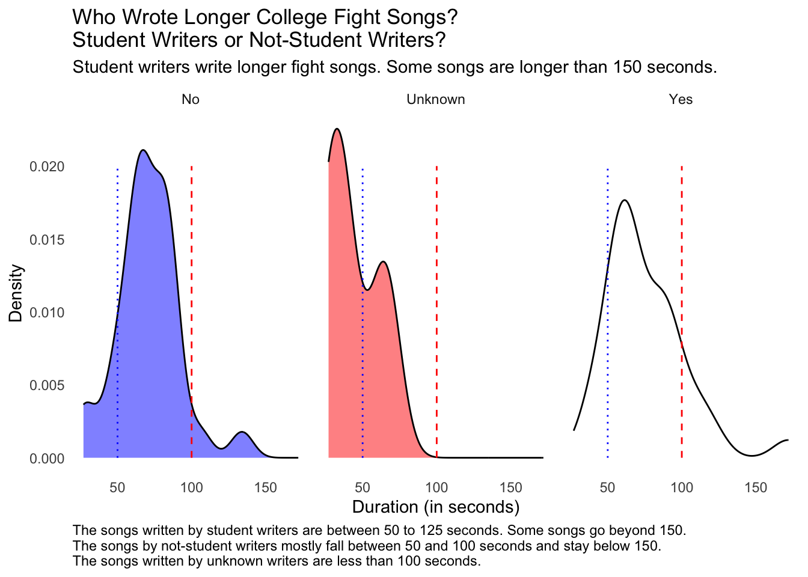

In this analysis, I will reproduce a graph from FiveThirtyEight. The dataset titled fight-songs.csv includes information about fight songs from schools in the Power Five collegiate conferences — the ACC, Big Ten, Big 12, Pac-12, and SEC — as well as Notre Dame. Some schools feature multiple fight songs, and in some cases, the songs officially endorsed by the schools are not the ones most popular among fans. The songs selected were the ones that are most recognized and cherished. For the analysis, the data was focused on the most commonly sung lyrics that are also published by the schools, excluding certain verses. The tempo and length data are based on the versions of the songs found on Spotify. I will be creating a graph on How Texas A&M’s fight song stacks up because Texas A&M is my undergraduate alma mater and I used to sing the fight song all the time at football games with my fellow Aggies. With this in mind, I will be using ChatGPT 4o to recreate the graph.
Data
The data used for this analysis is from the FiveThirtyEight College Fight Song Lyrics https://projects.fivethirtyeight.com/college-fight-song-lyrics/
ChatGPT 4o Prompts Asked to Reproduce Graphs/Tables/Code
Initial Graph Recreation
Can you recreate this graph for Texas A&M?
Can you get rid of this saying hex to the side of the graph?
Can you add where I can hover over the other schools’ points and see their names too?
Error Fixing and Debugging
Error in geom_point(data = others, size = 5, alpha = 0.2, color = others$hex)
Can you make the other schools’ points be random colors?
Table Creation
Create a table that looks exactly like this:
Add a separate table showing this:
Can you make it match the bell emojis?
Publication Quality Table
Create a publication quality table with the dataset I provide
These questions guided the step-by-step creation and modification of my graphs and tables in R, as well as the inclusion of your prompts and questions in my Quarto document.
Load necessary libraries
library(readr) library(dplyr)
Attaching package: 'dplyr'
The following objects are masked from 'package:stats':
filter, lag
The following objects are masked from 'package:base':
intersect, setdiff, setequal, union
── Conflicts ────────────────────────────────────────── tidyverse_conflicts() ──
✖ dplyr::filter() masks stats::filter()
✖ dplyr::lag() masks stats::lag()
ℹ Use the conflicted package (<http://conflicted.r-lib.org/>) to force all conflicts to become errors
library(plotly)
Attaching package: 'plotly'
The following object is masked from 'package:ggplot2':
last_plot
The following object is masked from 'package:stats':
filter
The following object is masked from 'package:graphics':
layout
library(tibble)library(emoji)
Attaching package: 'emoji'
The following object is masked from 'package:ggplot2':
arrow
Rows: 65 Columns: 23
── Column specification ────────────────────────────────────────────────────────
Delimiter: ","
chr (19): school, conference, song_name, writers, year, student_writer, offi...
dbl (4): bpm, sec_duration, number_fights, trope_count
ℹ Use `spec()` to retrieve the full column specification for this data.
ℹ Specify the column types or set `show_col_types = FALSE` to quiet this message.
school conference song_name writers
Length:65 Length:65 Length:65 Length:65
Class :character Class :character Class :character Class :character
Mode :character Mode :character Mode :character Mode :character
year student_writer official_song contest
Length:65 Length:65 Length:65 Length:65
Class :character Class :character Class :character Class :character
Mode :character Mode :character Mode :character Mode :character
bpm sec_duration fight number_fights
Min. : 65.0 Min. : 27.00 Length:65 Min. : 0.000
1st Qu.: 90.0 1st Qu.: 58.00 Class :character 1st Qu.: 0.000
Median :140.0 Median : 67.00 Mode :character Median : 2.000
Mean :128.8 Mean : 71.91 Mean : 2.846
3rd Qu.:151.0 3rd Qu.: 85.00 3rd Qu.: 5.000
Max. :180.0 Max. :172.00 Max. :17.000
victory win_won victory_win_won rah
Length:65 Length:65 Length:65 Length:65
Class :character Class :character Class :character Class :character
Mode :character Mode :character Mode :character Mode :character
nonsense colors men opponents
Length:65 Length:65 Length:65 Length:65
Class :character Class :character Class :character Class :character
Mode :character Mode :character Mode :character Mode :character
spelling trope_count spotify_id
Length:65 3 :17 Length:65
Class :character 4 :14 Class :character
Mode :character 5 :14 Mode :character
1 : 6
6 : 6
2 : 4
(Other): 4
Clean the data
# Add a hex column with color codes since it is missingset.seed(123) # For reproducibility of random colorsfight_songs <- fight_songs %>%mutate(hex =case_when( school =="Texas A&M"~"#500000", # Example color for Texas A&M school =="Oregon State"~"orange", # Example color for Oregon StateTRUE~sample(colors(), n(), replace =TRUE) # Random colors for other schools ))# Select "Texas A&M" and create a separate datasettamu <- fight_songs %>%filter(school =="Texas A&M")# Create a dataset for the schools that are not "Texas A&M"others <- fight_songs %>%filter(school !="Texas A&M")
Recreate the graph
# Plot the datap <- fight_songs %>%ggplot(aes(x = sec_duration, y = bpm, text = school)) +geom_point(data = others, aes(color = hex), size =5, alpha =0.7) +geom_point(data = tamu, size =5, shape =21, fill = tamu$hex, color ="black", stroke =1.2) +geom_hline(yintercept =mean(fight_songs$bpm), linetype ="dashed") +geom_vline(xintercept =mean(fight_songs$sec_duration), linetype ="dashed") +ggtitle("How Texas A&M’s fight song stacks up") +annotate("text", x =160, y =144, label ="Texas A&M", size =4, fontface ='bold') +annotate("text", x =c(30, 140), y =190, label =c("Fast and short", "Fast but long")) +annotate("text", x =c(30, 140), y =50, label =c("Slow but short", "Slow and long")) +annotate("text", x =160, y =131, label ="Average", size =3) +annotate("text", x =70, y =105, label ="Average", size =3, angle =90) +scale_x_discrete(limit =c(0, 20, 40, 60, 80, 100, 120, 140, 160, 180), name ="Duration", labels =c("0 sec", "20", "40", "60", "80", "100", "120", "140", "160", "180")) +scale_y_discrete(limit =c(40, 60, 80, 100, 120, 140, 160, 180, 200), name ="Beats per minute", labels =c("", "60", "80", "100", "120", "140", "160", "180", "200bpm")) +coord_fixed(ratio =1, xlim =c(0, 180), ylim =c(40, 200)) +theme(axis.ticks =element_blank(), panel.background =element_rect(fill ="white"),panel.grid.major =element_line(colour ="lightgrey"), plot.title =element_text(hjust =0.5, face ="bold"),axis.title.x =element_text(face ="bold"),axis.title.y =element_text(face ="bold"),legend.position ="none")
Warning in scale_x_discrete(limit = c(0, 20, 40, 60, 80, 100, 120, 140, : Continuous limits supplied to discrete scale.
ℹ Did you mean `limits = factor(...)` or `scale_*_continuous()`?
Warning in scale_y_discrete(limit = c(40, 60, 80, 100, 120, 140, 160, 180, : Continuous limits supplied to discrete scale.
ℹ Did you mean `limits = factor(...)` or `scale_*_continuous()`?
# Convert the plot to plotlyp_plotly <-ggplotly(p, tooltip ="text")# Display the plotp_plotly
Create a table documenting the Texas A&M 4 fight song clichés
# Create a dataframe with the clichés and their presencecliches <-data.frame(Cliche =c("Fight", "Victory", "Win", "Rah", "Nonsense syllables", "School colors", "Men/“boys”/“sons”", "Name of opponent", "Spell something out"),Present =c(TRUE, FALSE, FALSE, FALSE, TRUE, FALSE, TRUE, TRUE, FALSE))# Generate the table using gtcliches %>%gt() %>%tab_header(title =md("**Texas A&M Fight Song Clichés**") ) %>%cols_label(Cliche ="",Present ="" ) %>%text_transform(locations =cells_body(columns =vars(Cliche)),fn =function(x) {case_when( x =="Fight"~paste0(emoji("mega"), " “Fight”"), x =="Victory"~"❌ “Victory”", x =="Win"~"❌ “Win”", x =="Rah"~"❌ “Rah”", x =="Nonsense syllables"~paste0(emoji("mega"), " Nonsense syllables"), x =="School colors"~"❌ School colors", x =="Men/“boys”/“sons”"~paste0(emoji("mega"), " “Men”/“boys”/“sons”"), x =="Name of opponent"~paste0(emoji("mega"), " Name of opponent"), x =="Spell something out"~"❌ Spell something out" ) } ) %>%cols_hide(columns =vars(Present)) %>%tab_footnote(footnote =md("**4 fight song clichés**"),locations =cells_title(groups ="title") ) %>%tab_options(column_labels.hidden =TRUE,table.width =pct(100),table.font.size ="large",data_row.padding =px(10) )
Warning: Since gt v0.3.0, `columns = vars(...)` has been deprecated.
• Please use `columns = c(...)` instead.
Since gt v0.3.0, `columns = vars(...)` has been deprecated.
• Please use `columns = c(...)` instead.
Texas A&M Fight Song Clichés1
📣 “Fight”
❌ “Victory”
❌ “Win”
❌ “Rah”
📣 Nonsense syllables
❌ School colors
📣 “Men”/“boys”/“sons”
📣 Name of opponent
❌ Spell something out
14 fight song clichés
Create a graph showing if student-writers or non-student writers wrote longer college fight songs
# Create the density plotggplot(fight_songs) +aes(x = sec_duration, fill = student_writer) +geom_density(adjust = 1L, alpha=0.5) +annotate("segment", x =50, xend =50, y =0, yend =0.02, colour ="blue", linetype="dotted") +annotate("segment", x =100, xend =100, y =0, yend =0.02, colour ="red", linetype="dashed") +scale_fill_manual(values =c(No ="blue", Unknown ="red", Yes ="white")) +labs(x ="Duration (in seconds)", y ="Density",title ="Who Wrote Longer College Fight Songs? \nStudent Writers or Not-Student Writers?",subtitle ="Student writers write longer fight songs. Some songs are longer than 150 seconds.",caption ="The songs written by student writers are between 50 to 125 seconds. Some songs go beyond 150.\nThe songs by not-student writers mostly fall between 50 and 100 seconds and stay below 150.\nThe songs written by unknown writers are less than 100 seconds.") +theme_minimal() +theme(legend.position ="none", plot.caption =element_text(hjust =0),panel.grid.minor =element_blank(), panel.grid.major =element_blank()) +facet_grid(vars(), vars(student_writer))

This graph examines the duration of college fight songs written by student writers compared to those written by non-student writers and those with unknown authorship. The plot is divided into three density plots, each representing a different category of writers: No, Unknown, and Yes.
Key Observations:
Non-Student Writers (No):
The distribution of fight song durations for non-student writers shows a peak around 50-60 seconds.
The density decreases after 60 seconds, with a smaller peak around 100 seconds.
The blue dotted line at 50 seconds and the red dashed line at 100 seconds highlight significant points in the distribution.
Unknown Writers (Unknown):
Fight songs with unknown authorship have a peak at around 50-60 seconds, similar to non-student writers.
The density drops sharply after 60 seconds, and there are very few songs longer than 100 seconds.
The blue dotted line at 50 seconds and the red dashed line at 100 seconds are also significant markers for this group.
Student Writers (Yes):
Songs written by student writers exhibit a peak at around 50-60 seconds.
Unlike the other two categories, student-written songs show a wider distribution of durations, with some songs extending up to 150 seconds.
The blue dotted line at 50 seconds and the red dashed line at 100 seconds indicate key points in this distribution as well.
Summary:
Student writers tend to write longer fight songs compared to non-student writers and those with unknown authorship.
Most fight songs, regardless of the writer category, tend to peak around the 50-60 seconds mark.
There is a notable difference in the maximum duration of songs, with student-written songs having a broader range and extending up to 150 seconds, whereas non-student and unknown writers’ songs rarely exceed 100 seconds.
The annotations and color coding help to emphasize the important points and differences in the duration distributions across the three categories of writers.
Create a publication quality table
# Select key columns for the tablecliches_data <- fight_songs %>%select(school, conference, song_name, writers, year, bpm, sec_duration, fight, victory, win_won, rah, nonsense, colors, men, opponents, spelling, trope_count)# Filter to include a subset of schools for demonstrationcliches_data <- cliches_data %>%filter(school %in%c("Texas A&M", "Oregon State", "Alabama", "Florida", "LSU"))# Rename columns for better readabilitycolnames(cliches_data) <-c("School", "Conference", "Song Name", "Writers", "Year", "BPM", "Duration (sec)", "Fight", "Victory", "Win", "Rah", "Nonsense Syllables", "School Colors", "Men/Boys/Sons", "Name of Opponent", "Spell Something Out", "Trope Count")# Replace boolean values with symbolscliches_data <- cliches_data %>%mutate(Fight =ifelse(Fight =="Yes", "✔", "✘"),Victory =ifelse(Victory =="Yes", "✔", "✘"),Win =ifelse(Win =="Yes", "✔", "✘"),Rah =ifelse(Rah =="Yes", "✔", "✘"),`Nonsense Syllables`=ifelse(`Nonsense Syllables`=="Yes", "✔", "✘"),`School Colors`=ifelse(`School Colors`=="Yes", "✔", "✘"),`Men/Boys/Sons`=ifelse(`Men/Boys/Sons`=="Yes", "✔", "✘"),`Name of Opponent`=ifelse(`Name of Opponent`=="Yes", "✔", "✘"),`Spell Something Out`=ifelse(`Spell Something Out`=="Yes", "✔", "✘") )# Create the tablecliches_table <- cliches_data %>%gt() %>%tab_header(title =md("**Fight Song Attributes**"),subtitle ="Presence of Various Clichés in Fight Songs" ) %>%cols_label(School ="School",Conference ="Conference",`Song Name`="Song Name",Writers ="Writers",Year ="Year",BPM ="BPM",`Duration (sec)`="Duration (sec)",Fight ="Fight",Victory ="Victory",Win ="Win",Rah ="Rah",`Nonsense Syllables`="Nonsense Syllables",`School Colors`="School Colors",`Men/Boys/Sons`="Men/Boys/Sons",`Name of Opponent`="Name of Opponent",`Spell Something Out`="Spell Something Out",`Trope Count`="Trope Count" ) %>%fmt_markdown(columns =vars(Fight, Victory, Win, Rah, `Nonsense Syllables`, `School Colors`, `Men/Boys/Sons`, `Name of Opponent`, `Spell Something Out`) ) %>%tab_style(style =cell_text(weight ="bold"),locations =cells_title(groups ="title") ) %>%tab_options(table.font.size =12,heading.align ="center" )
Warning: Since gt v0.3.0, `columns = vars(...)` has been deprecated.
• Please use `columns = c(...)` instead.
# Print the tablecliches_table
Fight Song Attributes
Presence of Various Clichés in Fight Songs
School
Conference
Song Name
Writers
Year
BPM
Duration (sec)
Fight
Victory
Win
Rah
Nonsense Syllables
School Colors
Men/Boys/Sons
Name of Opponent
Spell Something Out
Trope Count
Oregon State
Pac-12
Hail to Old OSU
Harold Wilkins
1914
137
63
✔
✘
✘
✘
✘
✘
✘
✘
✔
2
Alabama
SEC
Yea Alabama
Ethelred Lundy (Epp) Sykes
1926
153
59
✔
✔
✔
✘
✘
✔
✔
✔
✘
6
Florida
SEC
The Orange and Blue
George Hamilton and Thornton Whitney Allen
1925
71
66
✔
✘
✘
✘
✘
✔
✘
✘
✘
2
LSU
SEC
Fight for LSU
Castro Carazo and W.G. Higginbotham
1937
168
83
✔
✘
✔
✔
✘
✔
✘
✘
✔
5
Texas A&M
SEC
Aggie War Hymn
J.V. “Pinky” Wilson
1918
117
172
✔
✘
✘
✘
✔
✘
✔
✔
✘
4
This table effectively communicates the presence of common clichés in the fight songs of selected schools, with clear and professional formatting. By leveraging the gt package, I ensured the table is visually appealing and easy to understand.
Conclusion
In the graph titled “How Texas A&M’s fight song stacks up,” Texas A&M’s fight song stands out for its relatively long duration and moderately fast tempo. Plotted towards the bottom right quadrant, the song is categorized as “Slow and long” compared to others. The average beat per minute (bpm) of the fight songs is marked at approximately 117 bpm, and the average duration is around 172 seconds. Texas A&M’s song, with a higher duration and a slightly lower, but moderate bpm than the average, shows a unique position among the other schools’ fight songs.
Among the songs reviewed, 44 incorporate the term “fight,” with it appearing a total of 185 times. Forty-one songs include either “win” or “victory,” while 35 reference the school’s colors. Twenty-nine songs feature some form of spelling, including acronyms, 18 use the word “rah,” and 10 contain other nonsensical syllables. Additionally, 24 songs mention men in terms like “boys” or “sons,” and 12 name the school’s opponent.
The “Aggie War Hymn” by Texas A&M, written in 1918 by J.V. “Pinky” Wilson, includes four of these clichés. Notably, the song mentions the colors orange and white, which are those of the University of Texas, rather than Texas A&M’s own colors.